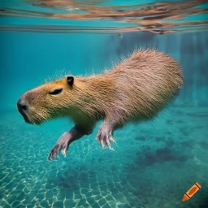
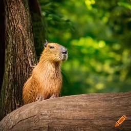
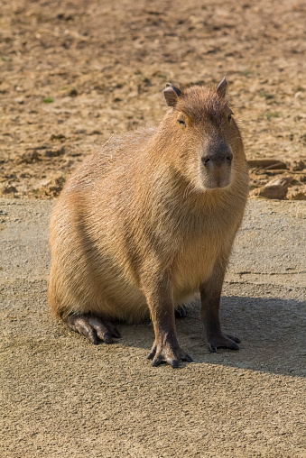
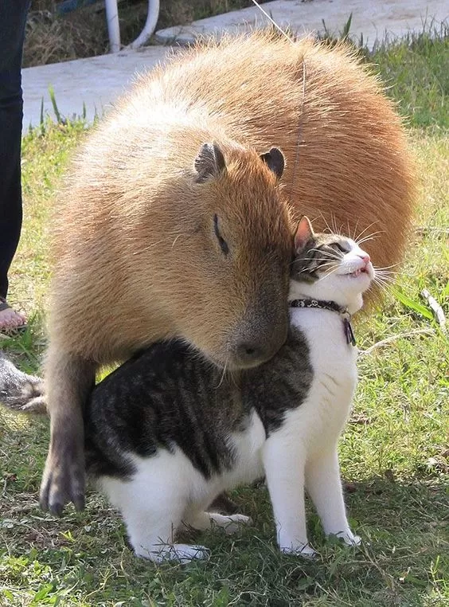

Welcome to this website about capybaras! The capybara is an animal which has risen to fame throughout the last few years thanks to different kinds of social media. Here you will be able to learn some simple information about capybaras, such as where they can be found, what they eat and what they are like as housepets.
There are three different pages for you to look through. Using the navigation bar at the top of the screen, you can find simple facts about what a capybara is, how they interact with humans as well as what capybaras eat. Hopefully you find some of the presented information interesting, or at the very least informative about the topic. Enjoy!
The capybara or greater capybara is a giant cavy rodent native to South America. It is the largest living rodent in the world and a member of the genus Hydrochoerus. Its latin name is Hydrochoerus hydrochaeris
The only other extant member is the lesser capybara. Its close relatives include guinea pigs and rock cavies, and it is more distantly related to the agouti, the chinchilla, and the nutria. The capybara inhabits savannas and dense forests, and lives near bodies of water.
It is a highly social species and can be found in groups as large as 100 individuals, but usually live in groups of 10 to 20 individuals.
The capybara is hunted for its meat and hide and also for grease from its thick fatty skin. It is not considered a threatened species.
Capybaras were initially discovered over 80 million years ago in Africa. Despite this, capybaras can only be found in Central and South America in the modern day. Capybaras are semi-aquatic and will spend most of their time in dense vegetation around rivers, lakes, ponds, marshes and swamps. Feeding mostly in the afternoon, and on and off at night, capybaras tend to doze in the morning.


Capybaras are affectionately called giant guinea pigs, but they are not as simple to care for as their smaller cousins. Smart, sociable animals, capybaras are the largest rodents in the world, weighing up to 170 pounds. They are relatively pleasant household pets that fare best in pairs or groups, so you must get more than one. Since they are so large, they require plenty of space and an accessible pool of water
Depending on where you live, it may be illegal to own a capybara. Some vicinities may require a permit or health certificate. For some examples, capybaras are banned as pets in California and Georgia. However, they are legal to possess in Texas, Pennsylvania, and New York. Even if a state allows it, some cities may not. Capybaras are considered illegal pets in the five boroughs of New York City. Before you buy one, contact your local city government or humane society to find out if it is legal to own a capybara where you live.


The capybara is the world's largest rodent, so one might think that a capybara needs to maintain a rather big diet in order to keep themselves alive. But what exactly do Capybaras eat? Capybaras are known for eating a variety of different foods. Capybara are herbivores, and use their long, sharp teeth for grazing on grass and water plants. An adult capybara can eat 2.7 to 3.6 kilograms of grass per day, but also eat a lot of leaves and other plants.
During the dry season, when fresh grasses and water plants dry up, a capybara will eat reeds, grains, melons and different types of squashes. Furthermore, capybaras are often known to eat different kinds of both fruits and berries. Due to the capybara's indulgement in vegetarian cuisine, the diet of a capybara is generally low in both protein and fiber.
Capybaras are not picky eaters, but they have been known to be selective about what they will consume. They will often reject food that is too salty or spicy for their taste buds. It is a good idea to feed your pet capybara a variety of food sources to make sure they get all the nutrients they need, since their natural diet often tends to be lacking.